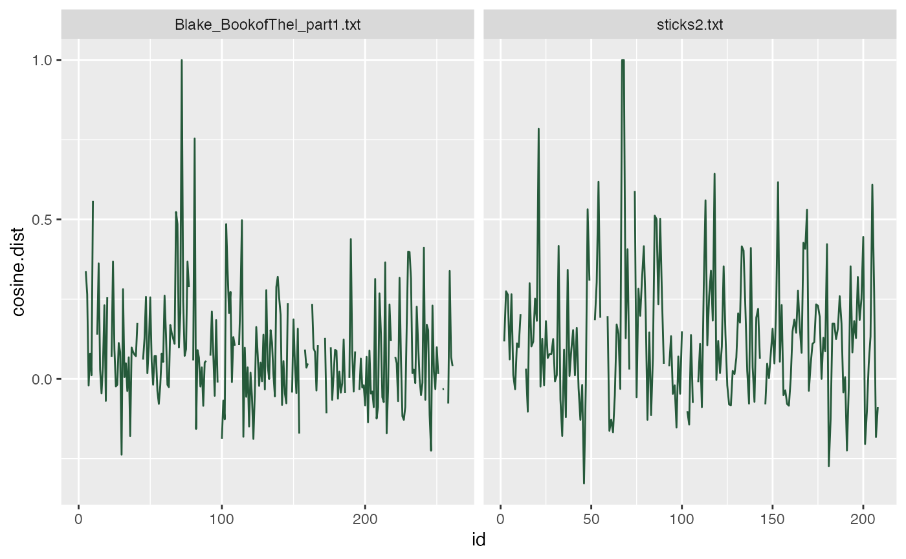
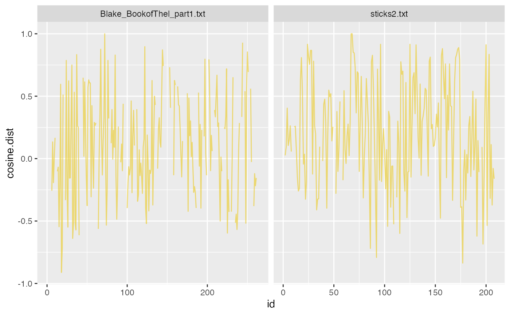

BigramSemanticDistance-vignette
Bonnie Zuckerman & Jamie Reilly
2022-03-01
BigramSemanticDistance-vignette.Rmdremotes::install_github("Reilly-ConceptsCognitionLab/semdistflow")
#>
#>
checking for file ‘/private/var/folders/g0/mjy7jjt50v3cgv592cnt1pw40000gn/T/RtmpluezLC/remotes86e3e8edb0/Reilly-ConceptsCognitionLab-semdistflow-6340f8a/DESCRIPTION’ ...
[32m✓
[39m
[38;5;247mchecking for file ‘/private/var/folders/g0/mjy7jjt50v3cgv592cnt1pw40000gn/T/RtmpluezLC/remotes86e3e8edb0/Reilly-ConceptsCognitionLab-semdistflow-6340f8a/DESCRIPTION’
[39m
[36m
[36m (391ms)
[36m
[39m
#>
[38;5;247m─
[39m
[38;5;247m
[39m
[38;5;247mpreparing ‘semdistflow’:
[39m
[36m
[39m
#> checking DESCRIPTION meta-information ...
[32m✓
[39m
[38;5;247mchecking DESCRIPTION meta-information
[39m
[36m
[39m
#>
[38;5;247m─
[39m
[38;5;247m
[39m
[38;5;247mchecking for LF line-endings in source and make files and shell scripts
[39m
[36m
[39m
#>
[38;5;247m─
[39m
[38;5;247m
[39m
[38;5;247mchecking for empty or unneeded directories
[39m
[36m
[39m
#>
[38;5;247m─
[39m
[38;5;247m
[39m
[38;5;247mbuilding ‘semdistflow_0.1.0.tar.gz’
[39m
[36m
[39m
#>
#>
library(semdistflow)
library(tidytext)
library(tidyverse)
library(knitr)
library(kableExtra)
library(stringr)
library(zoo)
library(stringi)Preparing your texts
Each text you wish to process should be saved as a .txt file. Your text can be stored in one folder or broken up into multiple folders. The file names in a given folder should be unique.
Loading your texts
mytexts <- readtxt(".") #reads all .txt in the working directory
mytextsinfolder <- readtxt("./your-text-folder") #reads all texts in a given folder in the working directory The resulting data.frame should have two columns “doc_id” and “doc_text”.
#> doc_id
#> 1 /private/var/folders/g0/mjy7jjt50v3cgv592cnt1pw40000gn/T/RtmpuMjdec/temp_libpath73d59978e7/semdistflow/extdata/Blake_BookofThel_part1.txt
#> 2 /private/var/folders/g0/mjy7jjt50v3cgv592cnt1pw40000gn/T/RtmpuMjdec/temp_libpath73d59978e7/semdistflow/extdata/sticks2.txt
#> doc_text
#> 1 The daughters of Mne Seraphim led round their sunny flocks. All but the youngest; she in paleness sought the secret air. To fade away like morning beauty from her mortal day: Down by the river of Adona her soft voice is heard: And thus her gentle lamentation falls like morning dew. O life of this our spring! why fades the lotus of the water? Why fade these children of the spring? born but to smile & fall. Ah! Thel is like a watry bow. and like a parting cloud. Like a reflection in a glass. like shadows in the water. Like dreams of infants. like a smile upon an infants face, Like the doves voice, like transient day, like music in the air; Ah! gentle may I lay me down, and gentle rest my head, And gentle sleep the sleep of death. and gentle hear the voice Of him that walketh in the garden in the evening time. The Lilly of the valley breathing in the humble grass Answer'd the lovely maid and said: I am a watry weed, And I am very small, and love to dwell in lowly vales; So weak, the gilded butterfly scarce perches on my head. Yet I am visited from heaven and he that smiles on all. Walks in the valley. and each morn over me spreads his hand Saying, rejoice thou humble grass, thou new-born lilly flower, Thou gentle maid of silent valleys. and of modest brooks; For thou shalt be clothed in light, and fed with morning manna: Till summers heat melts thee beside the fountains and the springs To flourish in eternal vales: then why should Thel complain, Why should the mistress of the vales of Har, utter a sigh. She ceasd & smild in tears, then sat down in her silver shrine. Thel answered. O thou little virgin of the peaceful valley. Giving to those that cannot crave, the voiceless, the o'ertired. Thy breath doth nourish the innocent lamb, he smells thy milky garments, He crops thy flowers. while thou sittest smiling in his face, Wiping his mild and meekin mouth from all contagious taints. Thy wine doth purify the golden honey, thy perfume, Which thou dost scatter on every little blade of grass that springs, Revives the milked cow, & tames the fire-breathing steed. But Thel is like a faint cloud kindled at the rising sun: I vanish from my pearly throne, and who shall find my place?" "Queen of the vales," the Lily answered, "ask the tender cloud, And it shall tell thee why it glitters in the morning sky, And why it scatters its bright beauty thro' the humid air. Descend, O little cloud, & hover before the eyes of Thel." The Cloud descended, and the Lily bowd her modest head, And went to mind her numerous charge among the verdant grass.
#> 2 Every year Thanksgiving night we flocked out behind Dad as he dragged the Santa suit to the road and draped it over a kind of crucifix he'd built out of metal pole in the yard. Super Bowl week the pole was dressed in a jersey and Rod's helmet and Rod had to clear it with Dad if he wanted to take the helmet off. On the Fourth of July the pole was Uncle Sam, on Veteran’s Day a soldier, on Halloween a ghost. The pole was Dad's only concession to glee. We were allowed a single Crayola from the box at a time. One Christmas Eve he shrieked at Kimmie for wasting an apple slice. He hovered over us as we poured ketchup saying: good enough good enough good enough. Birthday parties consisted of cupcakes, no ice cream. The first time I brought a date over she said: what's with your dad and that pole? and I sat there blinking. We left home, married, had children of our own, found the seeds of meanness blooming also within us. Dad began dressing the pole with more complexity and less discernible logic. He draped some kind of fur over it on Groundhog Day and lugged out a floodlight to ensure a shadow. When an earthquake struck Chile he lay the pole on its side and spray painted a rift in the earth. Mom died and he dressed the pole as Death and hung from the crossbar photos of Mom as a baby. We'd stop by and find odd talismans from his youth arranged around the base: army medals, theater tickets, old sweatshirts, tubes of Mom's makeup. One autumn he painted the pole bright yellow. He covered it with cotton swabs that winter for warmth and provided offspring by hammering in six crossed sticks around the yard. He ran lengths of string between the pole and the sticks, and taped to the string letters of apology, admissions of error, pleas for understanding, all written in a frantic hand on index cards. He painted a sign saying LOVE and hung it from the pole and another that said FORGIVE? and then he died in the hall with the radio on and we sold the house to a young couple who yanked out the pole and the sticks and left them by the road on garbage day.If you wish to use this package but want to read in your data another way, you must ensure that you have the columns names “doc_id” and “doc_text”. The “doc_id” column but be unique for each text. You may include other columns if you wish.
“Cleaning” your data
Explaining the cleaning functions here.
Open Class (Content) Words XXXXXX
Ommissions XXXXXXXXX.
Replacements XXXXXXXXXXXXX.
mytext.clean <- cleanme(mytext)
#> Performing cleaning retaining pronouns#> # A tibble: 2 × 3
#> # Groups: doc_id [2]
#> doc_id doc_text doc_clean
#> <chr> <chr> <chr>
#> 1 /private/var/folders/g0/mjy7jjt50v3cgv592cnt1pw40000gn/T/R… "The da… " daught…
#> 2 /private/var/folders/g0/mjy7jjt50v3cgv592cnt1pw40000gn/T/R… "Every … " year t…Tokenize and lemmatize your data
There are many ways to tokenize or lemmatize your data. Here we use the package tidy text to tokenize our data and textstem to lemmatize it.
mytext.token<- mytext.clean %>%
unnest_tokens(word, doc_clean)
mytext.token$lemma<- textstem::lemmatize_words(mytext.token$word)#> # A tibble: 6 × 3
#> # Groups: doc_id [1]
#> doc_id word lemma
#> <chr> <chr> <chr>
#> 1 /private/var/folders/g0/mjy7jjt50v3cgv592cnt1pw40000gn/T/RtmpuMjd… daug… daug…
#> 2 /private/var/folders/g0/mjy7jjt50v3cgv592cnt1pw40000gn/T/RtmpuMjd… mne mne
#> 3 /private/var/folders/g0/mjy7jjt50v3cgv592cnt1pw40000gn/T/RtmpuMjd… sera… sera…
#> 4 /private/var/folders/g0/mjy7jjt50v3cgv592cnt1pw40000gn/T/RtmpuMjd… led lead
#> 5 /private/var/folders/g0/mjy7jjt50v3cgv592cnt1pw40000gn/T/RtmpuMjd… round round
#> 6 /private/var/folders/g0/mjy7jjt50v3cgv592cnt1pw40000gn/T/RtmpuMjd… their theirBetween Word Distance Calculations
Using GloVe embeddings
mytext.glove <- bigram_cos_sim(targetdf = mytext.token, lookupdb = wiki_model_100, colname1 = lemma, colname2 = word)#> # A tibble: 6 × 5
#> doc_id word lemma_pair1 lemma cosine.dist
#> <chr> <chr> <chr> <chr> <dbl>
#> 1 /private/var/folders/g0/mjy7jjt50v3cgv592… daug… NA daug… NA
#> 2 /private/var/folders/g0/mjy7jjt50v3cgv592… mne daughter mne NA
#> 3 /private/var/folders/g0/mjy7jjt50v3cgv592… sera… mne sera… NA
#> 4 /private/var/folders/g0/mjy7jjt50v3cgv592… led seraph lead NA
#> 5 /private/var/folders/g0/mjy7jjt50v3cgv592… round lead round 0.338
#> 6 /private/var/folders/g0/mjy7jjt50v3cgv592… their round their 0.265Using SemDist15 embeddings
mytext.semdist <- bigram_cos_sim(targetdf = mytext.token, lookupdb = semdist15, colname1 = lemma, colname2 = word)#> # A tibble: 6 × 5
#> doc_id word lemma_pair1 lemma cosine.dist
#> <chr> <chr> <chr> <chr> <dbl>
#> 1 /private/var/folders/g0/mjy7jjt50v3cgv592… daug… NA daug… NA
#> 2 /private/var/folders/g0/mjy7jjt50v3cgv592… mne daughter mne NA
#> 3 /private/var/folders/g0/mjy7jjt50v3cgv592… sera… mne sera… NA
#> 4 /private/var/folders/g0/mjy7jjt50v3cgv592… led seraph lead NA
#> 5 /private/var/folders/g0/mjy7jjt50v3cgv592… round lead round NA
#> 6 /private/var/folders/g0/mjy7jjt50v3cgv592… their round their -0.257Plot
library(stringr)
mytext.glove <- mytext.glove %>%
mutate(text_name = sub('.*\\/', '', doc_id))
mytext.glove<- mytext.glove %>%
group_by(doc_id) %>%
mutate(id = row_number())
theme_plot <- ggplot(mytext.glove, aes(x = id, y=cosine.dist)) + geom_line(color="#02401BD9") + facet_grid(~text_name, scales="free")
theme_plot
#> Warning: Removed 4 row(s) containing missing values (geom_path).
mytext.semdist <- mytext.semdist %>%
mutate(text_name = sub('.*\\/', '', doc_id))
mytext.semdist<- mytext.semdist %>%
group_by(doc_id) %>%
mutate(id = row_number())
tax_plot <- ggplot(mytext.semdist, aes(x = id, y=cosine.dist)) + geom_line(color="#EBCC2AA3") + facet_grid(~text_name, scales="free")
tax_plot
#> Warning: Removed 5 row(s) containing missing values (geom_path).